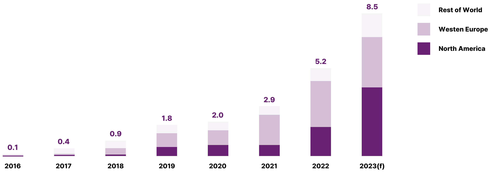

글로벌 스트리밍 시장은 최근 빠르게 변화하면서 경쟁이 심화되고 있다. 먼저 SVOD 시장의 경쟁 상황을 2024년 플랫폼별 가입자 수 기준으로 보았을 때 넷플릭스(Netflix)는 가입자 수 약 3억 1백만 이상으로 1위 사업자로 나타났으며, 글로벌 SVOD 시장 2위는 가입자 수 약 2억만 명으로 추정되는 아마존 프라임 비디오(Amazon Prime Video), 글로벌 SVOD 시장 3위 사업자는 디즈니플러스(Disney+)로 나타났다([그림 1]).
흥미로운 점은 이미 시장에서 두각을 나타내고 있었던 미국 SVOD 사업자들과 함께 국가별 인구수 측면에서 시장 규모가 큰 중국의 SVOD 사업자들이 각각 4위(Tencent Video)와 6위(iQYI)를 차지하고 있다는 점이다. 최근 몇 년 전까지 그동안 SVOD 사업에서 두각을 나타내던 글로벌 사업자들의 대부분이 미국 SVOD 플랫폼 사업자들이었던 상황에서 비교적 규모의 경제(economies of scale)를 확보하기 용이한 중국의 SVOD 플랫폼들이 최근 빠르게 성장하는 등 새로운 경쟁 상황 변화를 감지할 수 있다. 이와 같은 변화는 향후 글로벌 SVOD 시장에서 경쟁을 더 심화시키는 요소로 작용할 수 있으며, 글로벌 시장에서 경쟁력을 좌우할 수 있는 주요 요소 중 하나가 규모의 경제 확보임을 알 수 있다.
FlixPatrol(2025) 데이터에 따르면 국내 SVOD 사업자인 가입자 수 측면에서 티빙(Tving)이 31위, 쿠팡플레이(Coupang Play)가 38위, 웨이브(Wavve)가 42위인 것으로 나타났지만, 가입자 규모는 넷플릭스, 아마존 프라임 비디오, 디즈니플러스와 차이가 큰 것으로 보인다.
[그림 1] 주요 글로벌 SVOD 사업자들의 가입자 수(2024)
(출처: FlixPatrol(2025))
최근 PwC는 SVOD와 거래형 VOD(Transactional Video on Demand: TVOD) 및 광고형 VOD(Advertising Video on Demand: AVOD)를 합친 2024년 글로벌 OTT 시장 규모를 약 1468.49억 달러로 추정하고 있으며, 글로벌 OTT 시장은 2022년부터 2027년까지 연평균 8.43% 성장할 것으로 추정하고 있다. 글로벌 시장에서 OTT의 유형별 매출액 비중으로 보았을 때 2024년 SVOD 64.7%, AVOD 28.3%, TVOD 약 7.0% 달러로 추정되고 있으며, 2025년 시장성장률은 SVOD 6.2%, AVOD 11.8%, TVOD 1.5%로 추정되고 있다 (PwC, 2023; 한국콘텐츠진흥원, 2023). 이와 같은 최근 시장성장률 추정에서 향후 스트리밍 시장의 성장이 AVOD 중심으로 이루어질 가능성이 크다는 점을 확인 할 수 있다.
최근 Digital TV Research(2024)는 2029년의 글로벌 SVOD 시장에서 넷플릭스는 가입자 수 약 3억 1천3백만 명에 도달하게 되고, 넷플릭스, 아마존 프라임 비디오, 디즈니플러스 등 3개 주요 글로벌 SVOD 플랫폼이 글로벌 SVOD 시장의 약 43.2% 이상을 점유할 것으로 추정했다. 이와 같은 추정은 현재의 시장 경쟁 상황과 향후 변화를 어느 정도 고려한 비교적 보수적인 추정이지만, 그럼에도 불구하고 현재 경쟁력을 유지하고 있는 넷플릭스, 아마존 프라임 비디오, 디즈니플러스 등 3개 글로벌 SVOD 사업자의 강세가 2029년경까지 어느 정도 유지될 가능성이 높다고 해석할 수 있다(이상원, 2024).
시장 규모가 큰 미국 SVOD 시장의 경쟁 상황은 글로벌 시장과 유사하면서 조금 다른 측면을 볼 수 있다. Statista(2024)의 데이터에 따르면 시청자 선호도를 기준으로 점유율을 추정했을 때 미국 SVOD 시장에서 아마존 프라임 비디오가 2024년 4분기에 시장 점유율 약 22%로 미국 SVOD 시장 점유율 1위를 유지하고 있는 것으로 보인다. 넷플릭스는 시장 점유율 약 22%로 아마존 프라임 비디오와 근소한 차이로 미국 시장 점유율 2위를 차지하고 있으며 이와 함께 맥스(MAX, 14%), 디즈니플러스(11%)는 각각 시장 점유율 3, 4위를 기록하고 있다([그림 2] 참조).
[그림 2] 미국 SVOD 시장에서의 주요 플랫폼 시장 점유율(2024)
(출처: Statista(2024))
이와 같은 글로벌 SVOD 시장에서의 경쟁 심화는 넷플릭스 등 주요 글로벌 SVOD 사업자들이 2022년 이후 광고를 포함한 저가 요금제를 출시하고 계정 공유를 유료화하는 등의 전략을 실행하는 계기가 되었으며, SVOD 서비스 플랫폼 사업자들이 오리지널 콘텐츠 제작을 위해 대규모 콘텐츠 투자를 실행하는 요인으로 작용하고 있지만 한편으로 과도한 콘텐츠 투자로 인해 SVOD 사업자들이 영업이익을 내기 어려운 시장 상황과도 연결된다고 볼 수 있다(이상원, 2024).
글로벌 스트리밍 시장에서의 경쟁 심화는 기존 SVOD 사업자들이 새로운 전략적 시도를 하게 하는 촉매제 역할을 하고 있다. 예를 들어 최근 아마존 프라임 비디오는 자체 선형 TV 채널인 ‘프라임(Prime)’을 2025년 4월 17일에 출시했다. ‘프라임’은 독일과 오스트리아의 아마존 프라임 비디오 회원에게 독점적으로 제공되며, 프로그램 일정에는 독점 프라임 비디오(Prime Video) 오리지널, 국제 제작물, 라이브 스포츠와 같은 다양한 콘텐츠가 포함되었다(Broadband TV News, 2025). 라이브 스포츠 콘텐츠는 ‘프라임’의 주요 제공 콘텐츠 중 하나로, 독일 시청자에게는 UEFA 챔피언스 리그 경기가, 독일과 오스트리아 시청자에게는 윔블던 테니스 경기가 제공되고 있다(Broadband TV News, 2025).
이와 같이 아마존 프라임 비디오는 새로운 선형 채널 제공을 통해 전통적인 TV 포맷에 익숙한 사용자에게 콘텐츠 발견을 간소화하는 것을 목표로 하고 있으며, 이와 함께 광고 모델을 도입하여 광고 중단을 최소화할 계획이다(Broadband TV News, 2025). 광고 시간은 전통적인 TV보다 “더 짧고 덜 빈번하게” 진행될 계획이며, 이는 스트리밍 서비스에 광고를 통합하면서도 좋은 시청 경험을 유지하려는 전략적 의도로 해석되고 있다.
아마존 프라임 비디오는 그동안 유럽 시장을 중심으로 스포츠 콘텐츠 중계권 확보를 위해 매우 적극적인 노력을 전개하였고, 영국 프리미어 리그, 챔피언스 리그, 미국의 NFL 등에 대한 중계권을 확보한 바 있다(한국방송통신전파진흥원, 2022).
글로벌 SVOD 사업자들은 그동안 주로 고가의 스포츠 중계권을 확보한 후 자사 유료 가입자들에게만 제공하거나 별도 유료 상품으로 서비스를 제공한 바 있다. 넷플릭스는 월드레슬링엔터테인먼트(WWE)의 인기 프로그램 RAW의 독점 중계권을 2025년부터 10년간 약 6조 7,000억 원에 사들인 바 있다(경향신문, 2024).
최근에는 AVOD 및 FAST 사업자들도 실시간 스포츠 중계를 무료로 제공함으로써 스포츠 콘텐츠 경쟁력을 강화하는 것이 점차 전략적으로 중요해지고 있다. AVOD와 FAST가 광고 기반임을 고려한다면 광고 수익을 증가시키면서 이용자 수를 확보할 수 있는 효율적인 전략으로 판단된다(이상원, 2024). 애플은 2022년 4월부터 애플TV플러스 가입자들을 대상으로 메이저리그 베이스볼(MLB) 금요 중계방송을 제공하기 시작했고, 2022년 6월에는 미국 프로축구 리그(Major League Soccer, MLS)와 2023년 시즌부터 10년간 모든 경기를 독점 중계하는 계약을 시즌 당 2억 5천만 달러에 체결하고, 2023년 시즌 개막을 한 달 앞둔 2월 1일에 MLS 전용 중계 유료 상품인 ‘MLS 시즌 패스(MLS Season Pass)’를 제공하고 있다(이상원, 2024; 한국콘텐츠진흥원, 2023). 국내시장에서는 쿠팡플레이가 2024년 하반기부터 4년간 약 350억 원에 독일 프로축구 분데스리가의 독점 중계권을 확보했고, 티빙은 2026년까지 3년간 KBO 독점 중계권을 1,350억 원에 확보한 바 있다(경향신문, 2024).
한편, 미국의 주요 미디어 및 방송 회사 중 하나인 폭스 코퍼레이션(Fox Corporation)은 최근 2025년 말까지 구독형 스트리밍 서비스를 출시할 계획을 발표했다. Fox의 스트리밍 서비스는 뉴스와 스포츠 콘텐츠와 같이 실시간으로 제공이 가능한 콘텐츠를 제공하는 전략적 선택을 했고, 현재 케이블 패키지에 가입하지 않은 시청자들을 대상으로 하고 있다(Advanced Television, 2025).
이와 같이 선형 TV 채널 제공 전략 중 스포츠 중계는 몇 가지 장점이 있는 것으로 여겨지고 있다. 일단 실시간 스포츠 콘텐츠는 일반적인 콘텐츠와 비교했을 때 팬층이 두텁고 충성 시청자들이 존재해 시청 수요가 어느 정도 보장될 가능성이 높다(경향신문, 2024). 이와 함께 기존 오리지널 콘텐츠를 제공하는 경우 인기 오리지널 콘텐츠 방영이 끝난 시기에 서비스를 해지하고 다른 플랫폼으로 이동하는 OTT 서비스 호퍼를 방지하기 어렵지만 인기 있는 실시간 스포츠 콘텐츠를 제공하는 경우 시즌 종료 전에 서비스를 해지할 가능성이 매우 낮다는 점에서 상당히 안정적인 수익을 확보할 가능성이 높다(이상원, 2024). 또한 플랫폼에 오래 체류하게 하는 록인효과(lock-in effect)도 기대할 수 있기 때문에 스트리밍 플랫폼 입장에서는 상당한 광고 수익도 얻을 가능성도 있다. 결국 스트리밍 사업자들의 실시간 스포츠 중계권 확보는 콘텐츠 투자의 위험률을 감소시켜 주고 이용자 구독을 지속시켜 줄 수 있으며 이에 따라 가입자 증가 및 유지뿐만 아니라 추가적인 광고 수익을 얻을 수 있는 전략이라고 볼 수 있다.
[그림 3] 전 세계 SVOD 사업자들의 스포츠 중계권 확보를 위한 투자 비용 추이(2016-2023(F)) (단위: 10억달러)
(출처: Ampere Analysis(2023))
따라서 최근 스트리밍 사업에서 스포츠 중계권 확보는 가장 효율적인 콘텐츠 투자 전략 중 하나로 주목받고 있으며, 여러 가지 장점 때문에 SVOD 사업자들은 인기 스포츠 중계권 확보를 위해 투자 비용을 점점 증가시키고 있다([그림 3] 참조).
전 세계 SVOD 사업자들의 스포츠 중계권 확보를 위한 투자 비용은 2023년에 약 85억 달러로 추정되고 있으며, 이 수치는 전 세계 스포츠 중계권 투자의 약 21%를 차지하는 것으로 추정된다(Ampere Analysis, 2023). 이와 같은 실시간 스포츠 중계권을 장기간 계약을 통해 확보하게 되는 경우 상당히 오랜 기간 동안 안정적인 수익을 확보할 수 있기 때문에 ‘지속 가능한 성장’ 측면에서 매우 투자 효율성이 크다고 볼 수 있다(이상원, 2024).
이와 같은 점을 고려했을 때 향후 글로벌 스트리밍 사업자들은 한편으로는 아마존 프라임 비디오의 시도와 같이 스트리밍 서비스에 광고를 통합하면서도 좋은 시청 경험을 유지하여 기존 순수 SVOD나 유료방송 시청과 차별화하면서도, 스포츠 중계와 같이 인기 실시간 콘텐츠를 독점적으로 제공하여 차별화하는 등 다양한 전략적인 시도를 할 것으로 보인다.
- Advanced Television(2025). Fox launching streaming service this year.
- Ampere Analysis(2023). Streaming services will spend over $8bn on sports rights in 2023.
- Broadband TV News (2025). Amazon to launch linear TV channel Prime in Germany.
- FlixPatrol(2025). Top Streaming Services by Subscribers.
- PwC (2023). PwC Global Entertainment and Media Outlook 2023-2027.
- 배문규(2024. 3. 14). OTT는 왜 스포츠 중계에 나서나…핵심은 광고요금제, <경향신문>
- 이상원(2024). <DX 3.0 시대의 미디어 플랫폼>. 파주: 한울아카데미.
- 한국방송통신전파진흥원(2022). OTT 스트리밍 서비스의 사업 모델 다각화 전략. <미디어 이슈&트렌드>. Vol.50
- 한국콘텐츠진흥원(2023). 스포츠도 OTT의 시간으로. <글로벌OTT 동향 분석> Vol. 4.